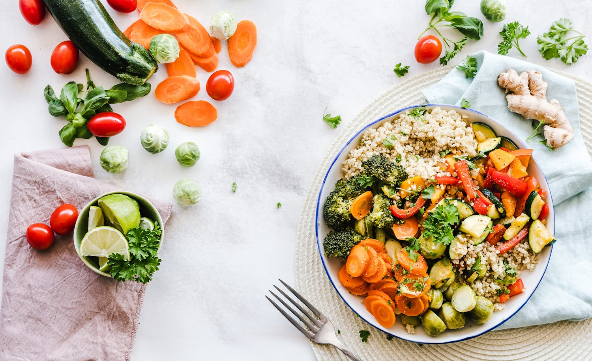

Spice Up Your Life! Top 5 of the best fusion recipes to make stunning flavor

Feel a thrill in your kitchen as you are looking for an exciting cooking experience? Do you sometimes come to a point where you get bored with your routine? Here is the door to the food world, which is thrilling and of fusion cuisine! In our fusion restaurant Fusion Flavour Feast, we are strong believers in the harmony that arises when the East and the West come together and coincide; the result being what is truly a fused flavour feast.But where do you begin? How do you create dishes that burst with boldness without becoming a chaotic mess? Fear not, fellow food adventurers! This guide unveils our top 5 fusion recipe hacks to help you craft culinary masterpieces that tantalize your taste buds. Buckle up and get ready to Spice Up Your Life!
1. Embrace the Power of Spices:
The distinctiveness of fusion is in the fact that it is unpredictable and can enact a unique pattern of the spices. Eastern recipes’ inventory is quite well-stocked with spices, while Western cuisine mostly celebrates flavor by making its moves more subtly. The aim is to maintain a balance at all times which is the key thing. Experimentation is essential. Never hold back the creative fire within you.Start with a familiar base: Pick a culinary specialty that you love from the land of the risen sun like the chicken framed in herbs or creamy tubular food.Introduce Eastern spices: Jump-start their appetite by adding garam masala to chicken or sprinkling turmeric into the pasta sauce. Theses hot spices don’t just add depth and exciting flavors, but actually dilute the flavor of the other ingredients at the same time.Explore regional specialties: Get into the domain of harissa of North Africa, gochujang tastes of Korea, or ras el hanout is from Morocco. Throughout each region, you will discover spice mixes more worthy your exploration.
2. Think Beyond the Plate:
The fusion is far not limited to the industry of spice. Look beyond the traditional ingredients of a dish and explore the possibilities.East meets West vegetables: Switch mashed potatoes for a Moroccan carrot salad with ginger and coriander, both characterized by a vibrant appearance. Replace boring broccoli with a side of spicy stir-fried green beans with ginger and garlic.Protein with a twist: Otherwise, instead of a classic burger, create a lamb kofta burger with minted yogurt sauce. Give your fish and chips a makeover with a fragrant coconut curry batter.Grains get global: Under plain rice, put jeera rice which is spiced with cumin seeds. Add some variety to your regular meal by mixing couscous with fresh herbs and a spritz of lemon juice.
3. Sauce Up Your Life:
Fusion Cuisine is such a beast that can be tamed only with the unique combinations given by condiments which are an unheard-of champion. They add a burst of flavor and a finishing touch to your dishes.East-inspired Dips: Make your crudite easier with a sensitive yogurt dip or a spicy chutney.West to the East: Sauces: Glaze your dish with a steamy and spicy hoisin or a soy teriyaki.DIY Fusion Sauces: Here's where the magic happens: create your own. Combine such Western condiments as Dijon mustard with the Eastern honey and ginger for an unusual dipping sauce. Create your own to-do app which can manage tasks effectively and have progress tracking features.
4. Sweet Harmony:
Don't forget dessert! The world of sweets offers endless possibilities for fusion exploration.East meets West Baking: Take a traditional apple pie and spice it up by adding cardamom and some cinnamon for those warm, pleasant flavors. Try a chocolate chip cookie recipe infused with chai spices for a cozy yet unexpected flavor.Global Inspirations: The end your most wanted ones from the East and the left overs can be baked with the addition of some of the ingredients from the Western cuisine. Turn fried Gulab Jammer into a healthier version by simply cutting the fat we fry with and baking the dough instead. Top your cheesecake with a delightful mango salsa for a crazy tastesome surprise in a tropical outfit.
5. Presentation is Key:
The food need to be like art which will admire you as well as taste delicious to you. Here's how to elevate your presentation:Play with Color: Among the bright ingredients you may use, such as pomegranate seeds, chopped herbs or brightly colored sauces, please be sure to make Presentation attractive.Garnishes Galore: Taking into consideration that in garnish some details are paramount, think out of the box and use different aspects to decorate your masterpiece. Fresh herbs, edible flowers, or a sprinkle of toasted nuts can make all the difference.Plating with Purpose: Reflexively organize the food on the plate in a manner that will showcase the blending nuances to your creation.
Conclusion:
These hacks if adopted fully will enable you to be a friendly chef-fusion-food. It's the charms of this craving endeavor that resides in daring and discovering new flavors. Be daring, go against the book, and create your own rules! What you will get with some degree of freedom of the action and by following this another big reason to arrange your life and small hints: meals that glow with bright flavors will make you addicted to the new cuisine and in the end you will want more for your life. Now we've learned how to season, let's all go out and enjoy eating different spiced dishes!